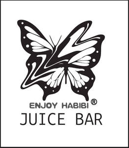

Trade Mark Journal No.2025/016 18 April 2025
UK00004185328 7 April 2025 (34)

- Class 34
- Electronic cigarette cartomizers; Smokeless cigarette vaporizer pipes; Cigarette lighters; Electronic cigarette atomizers; Cigarettes; Menthol cigarettes; Cigarette ash receptacles; Cigarette tubes; Electric cigarettes [electronic cigarettes]; Cigarette tips; Tips (Cigarette -); Cigarette lighter holders; Portable cigarette ash pouches; Cigarette boxes; Cigarette papers; Tobacco tar for use in electronic cigarettes; Filters (Cigarette -); Cigarette filters; Smoking sets for electronic cigarettes; Cigarette packets; Cigarettes, cigars, cigarillos and other ready-for-use smoking articles; Cigarette cutters; Cigarette holders; Liquid nicotine solutions for use in electronic cigarettes; Liquid nicotine solutions for electronic cigarettes; Cigars for use as an alternative to tobacco cigarettes; Electronic cigarettes; Electronic cigarette boxes; Lighters for smokers [cigarette lighters] [not for automobiles]; Electronic cigarette cleaners; Cigarette paper; Hookah tobacco; Smokers (Lighters for -); Lighters for smokers; Electronic cigarette liquid [e-liquid] comprised of flavourings in liquid form used to refill electronic cigarette cartridges; Electronic cigarette liquid [e-liquid] comprised of flavorings in liquid form used to refill electronic cigarette cartridges; Smoking tobacco; Cigar lighters; Shisha tobacco; Oral vaporizers for smokers; Cartridges for electronic cigarettes; Mouthpieces for cigarettes; Gas containers for cigarette lighters; Tips of yellow amber for cigar and cigarette holders; Yellow amber (Tips of -) for cigar and cigarette holders; Menthol pipe tobacco; Liquids for electronic cigarettes; Ashtrays for smokers; Liquid for electronic cigarettes; Cigarette cases; Cases (Cigarette -); Pipes for smoking mentholated tobacco substitutes; Electronic cigarette cases; Firestones for lighters for smokers; Refill cartridges for electronic cigarettes; Electronic cigarette liquid [e-liquid] comprised of propylene glycol; Inhalers for use as an alternative to tobacco cigarettes; Mouthpieces for cigarette holders; Cigarette holders (Mouthpieces for -); Wicks adapted for cigarette lighters; Snus with tobacco; Electronic cigarette liquid [e-liquid] comprised of vegetable glycerin; Roll-your-own tobacco; Electronic smoking pipes; Electronic cigarettes for use as an alternative to traditional cigarettes; Cigarette lighters of precious metal; Holders for electronic cigarettes; Smokeless tobacco; Cigar pouches; Replaceable cartridges for electronic cigarettes; Cigarette rolling papers; Tea for smoking as a tobacco substitute; Cigarettes containing tobacco substitutes; Chemical flavourings in liquid form used to refill electronic cigarette cartridges; Chemical flavorings in liquid form used to refill electronic cigarette cartridges; Liquid solutions for use in electronic cigarettes; Liquefied gas cylinders for cigarette lighters; Devices for extinguishing heated cigarettes, cigars and heated tobacco sticks; Snus without tobacco; Filter tips for cigarettes; Electronic shisha pipes; Vaporizers for smoking purposes; Hemp for smoking; Smoking pipes; Smoking urns; Ready-made cigarette tubes with filters; Chewing tobacco; Mentholated tobacco; Electronic cigars; Pipe tobacco; Cases for electronic cigarettes; Cigarette rolling machines; Tobacco; Gas containers for cigar lighters; Cigar lighters (Gas containers for -); Cigarette lighter holders of precious metal; Books of cigarette papers; Cigarette papers (Books of -); Tobacco pouches; Pouches for tobacco; Pouches (Tobacco -); Devices for extinguishing heated cigarettes and cigars as well as heated tobacco sticks; Cigar tubes; Personal vaporisers and electronic cigarettes, and flavourings and solutions therefor; Cigarette lighters, not of precious metal; Electronic nicotine inhalation devices; Flavourings for tobacco; Tobacco free oral nicotine pouches [not for medical use]; Tipping paper for cigarettes; Automatic cigarette cases; Tobacco and tobacco substitutes; Hand-rolling tobacco; Cigar humidifiers; Snuff with tobacco; Humidified cigar boxes; Smoking pipe cleaners; Cigars; Flavored tobacco.
Nihal Vaping Ltd